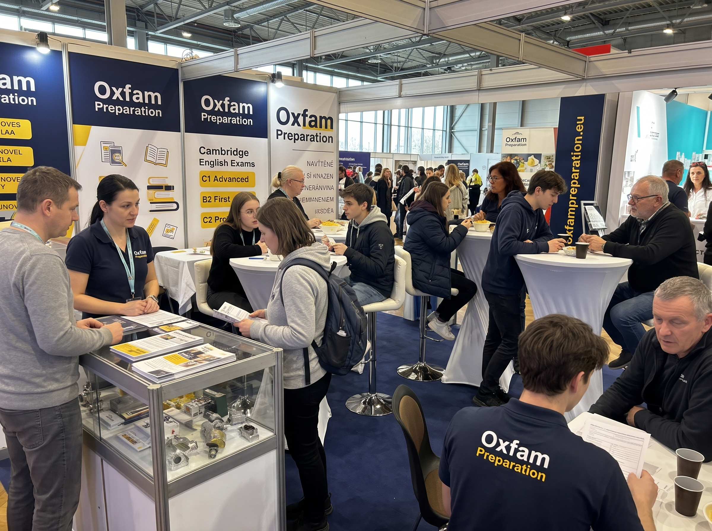

Účast na vzdělávacím veletrhu Gaudeamus

I letos jsme se zúčastnili největšího evropského veletrhu pomaturitního a celoživotního vzdělávání Gaudeamus. Náš stánek navštívily stovky studentů středních škol, výchovných poradců i učitelů anglického jazyka.
Co si návštěvníci mohli na místě vyzkoušet?
- Rychlý rozřazovací mini-test: Během 10 minut si studenti ověřili, zda mají blíže k úrovni B2 First, nebo už zvládnou C1 Advanced.
- Ukázka nových testů pro rok 2026: Představili jsme naši kompletní online platformu s okamžitým vyhodnocením a časovačem podle skutečných zkoušek.
- Konzultace grantů pro školy: S řediteli a pedagogy jsme probrali možnosti financování zkušebních dnů nanečisto z fondů EU.
Děkujeme za skvělou atmosféru
Velký zájem byl především o verze zkoušek B1 Preliminary for Schools a B2 First for Schools, které studentům otevírají dveře na vysoké školy v Česku i v zahraničí bez nutnosti skládat profilovou maturitu z angličtiny.
Prohlédnout balíčky testů 2026